ما فكرة البرنامج؟
برنامج تدبير الاقتصاد والمطعمة برنامج مكتبي يعمل على Windows دون اتصال بالإنترنت، يجمع في مكان واحد أشغال مسيّر المصالح المادية والمالية بالثانوية: تدبير اللوازم والتجهيزات، والتسجيل وإعادة التسجيل وما يرتبط به من وصولات ومداخيل، وتدبير المطعمة والقسم الداخلي في إطار التدبير المفوض، والتقارير والمحاضر اليومية والدورية. يُدخل المسيّر معطياته مرة واحدة ثم يستخرج الوثائق الجاهزة للطباعة أو PDF/Word/Excel بترويسة المؤسسة وتوقيعاتها.
ماذا يقدمه للمسيّر؟
- توفير الوقت في إعداد الوثائق اليومية
- تقليل الأخطاء في الأعداد والمبالغ
- وثائق موحدة الشكل بتصميم رسمي
- بيانات محفوظة على حاسوبك مع نسخ احتياطي مشفّر
مكونات البرنامج
الاقتصاد: اللوازم والتجهيزات والمالية
- جرد التجهيزات حسب القاعات والمرافق (جيدة / تحتاج إصلاحا / متلاشية) وطباعة الجرد
- مخزون المستلزمات: دخول وخروج ورصيد وحد التنبيه
- استلام اللوازم من المديرية (Décharge) وإشهادات السحب
- المشتريات والفواتير، وسجل تسليم الأدوات للأساتذة، وسجل تسليم المفاتيح
- المالية والمحاسبة: الحسابات والصندوق والودائع والشيكات
- محضر تسليم وتسلم المهام بملاحقه (جرد، ديون، مخزون، حالة البنايات…)
- لائحة الأساتذة والأطر، وأرشيف المواسم
التسجيل وإعادة التسجيل
- استيراد لائحة «مسار» مرة واحدة
- تسجيل وإعادة تسجيل التلاميذ، ومجموعات الدعم
- حركية التلاميذ (الوافدون والمغادرون)
- وصولات الأداء والسجلات، ولوحة قيادة التسجيل
- اعتماد المداخيل وتوزيعها على حسابات المؤسسة
المطعمة والقسم الداخلي
- لوحة قيادة المطعمة، وإعداد رسائل الطلبيات اليومية من ورقة الاتصال وورقة الغياب
- مراقبة المقادير ومكونات الأطباق حسب الصفقة
- المحاضر اليومية والشهرية لتسلم الخدمة، وبيان وكناش الاستهلاك
- التقرير اليومي لتتبع نظام المطعمة (نظافة، وجبات، استلام المواد، بنايات)، والمخالفات والمحاضر
- التلاميذ الممنوحون: استيراد اللوائح، ولوائح الممنوحين وإحصائياتهم بنماذج جاهزة
ميزات عامة
- يعمل دون إنترنت والبيانات محفوظة في حاسوبك
- قفل برمز سري ونسخ احتياطي مشفّر
- سمة فاتحة وداكنة
- تصدير الوثائق: طباعة، PDF، Word، Excel، بمعاينة موحّدة في كل المكوّنات
- التفعيل برمز خاص بكل حاسوب
لقطات من البرنامج
اضغط على أي لقطة لتكبيرها.

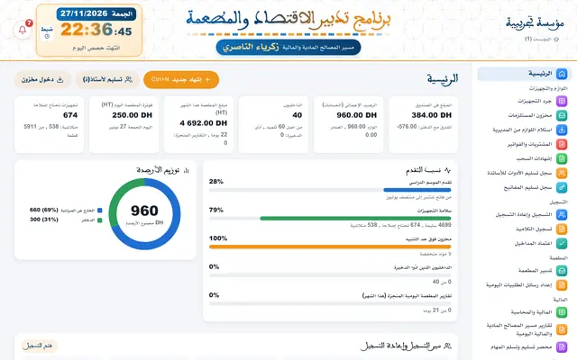
الشاشة الرئيسية: مؤشرات الصندوق والتجهيزات والمطعمة وسير التسجيل
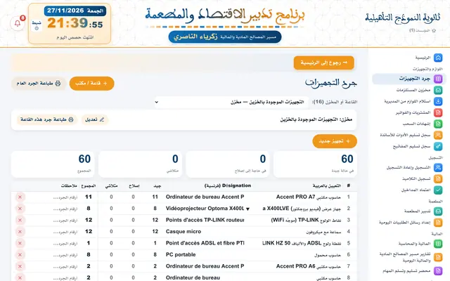
جرد التجهيزات حسب القاعات والمرافق
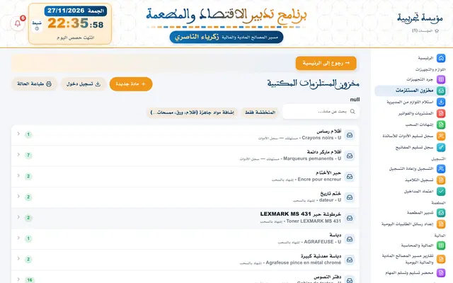
مخزون المستلزمات
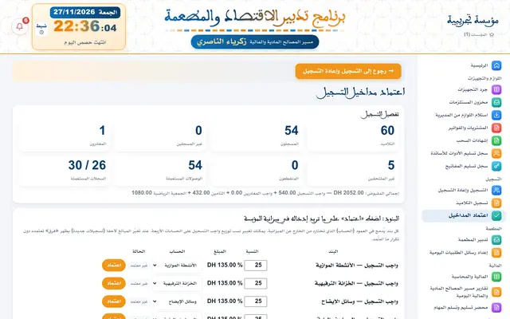
اعتماد مداخيل التسجيل وتوزيعها على حسابات المؤسسة
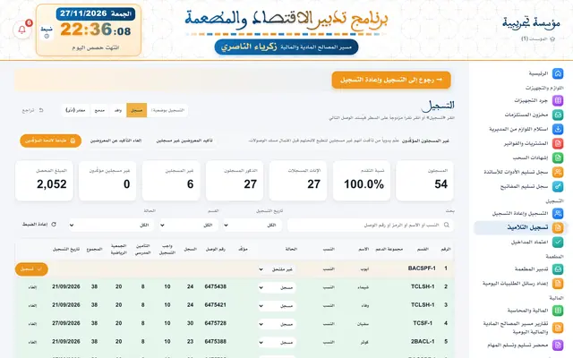
تسجيل التلاميذ وإعادة تسجيلهم ووصولات الأداء
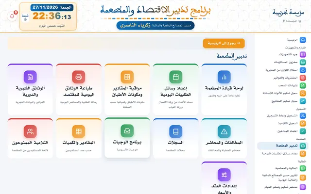
مركز تدبير المطعمة
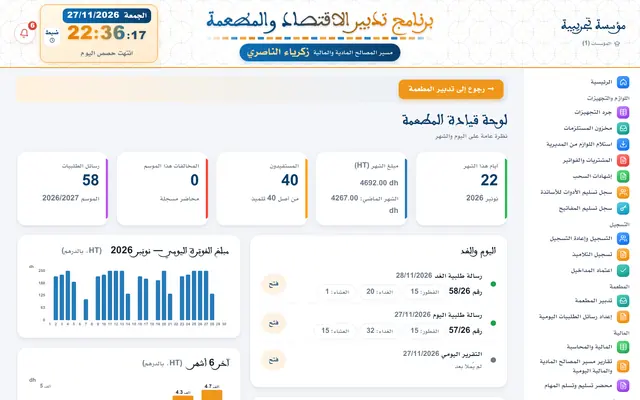
لوحة قيادة المطعمة
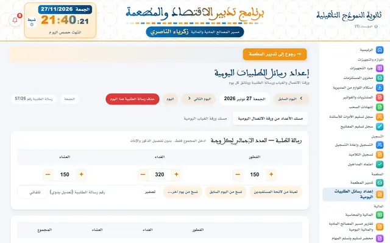
إعداد رسائل الطلبيات اليومية
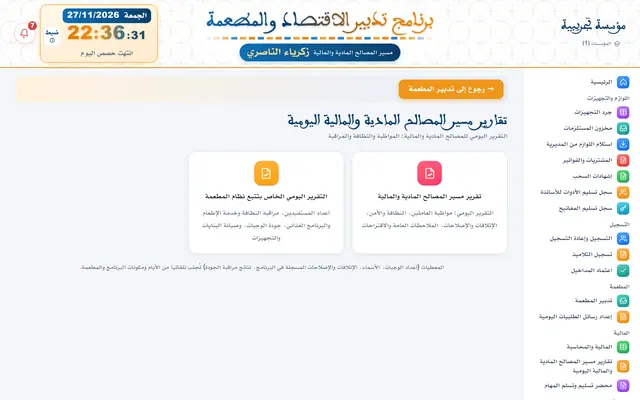
تقارير المصالح المادية والمالية وتتبع المطعمة
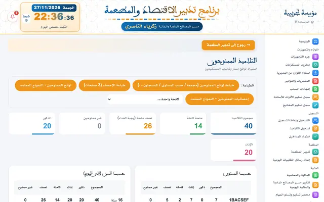
التلاميذ الممنوحون ولوائحهم وإحصائياتهم
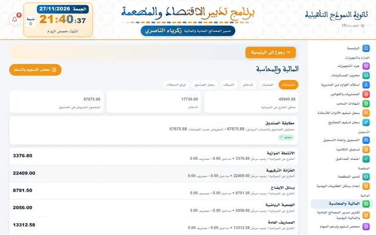
المالية والمحاسبة
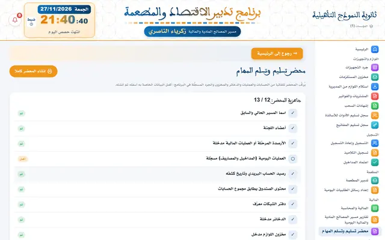
محضر تسليم وتسلم المهاماللقطات بمعطيات ومؤسسة تجريبية.
نماذج من الوثائق التي ينجزها البرنامج
عشر وثائق نماذج، بمعطيات ومؤسسة تجريبية.

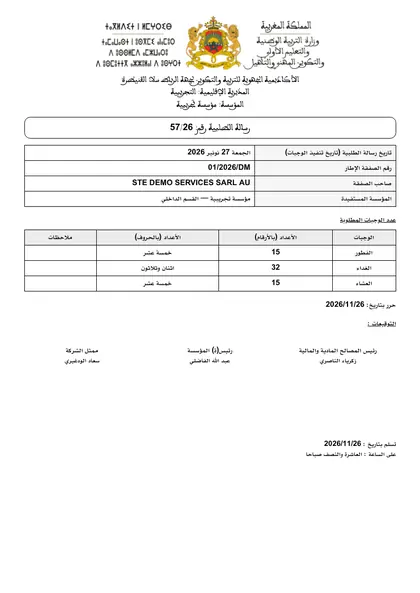
رسالة الطلبية اليوميةالمطعمة

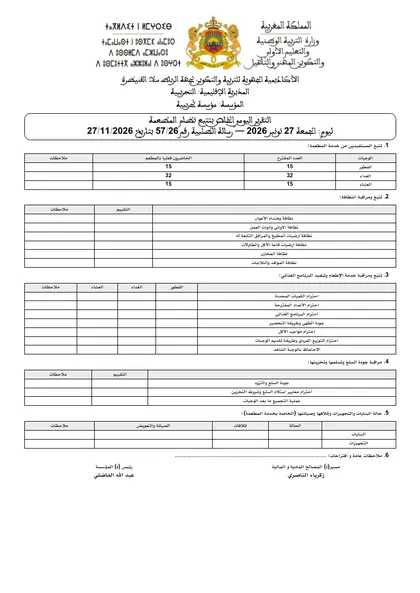
التقرير اليومي لتتبع نظام المطعمةالمطعمة

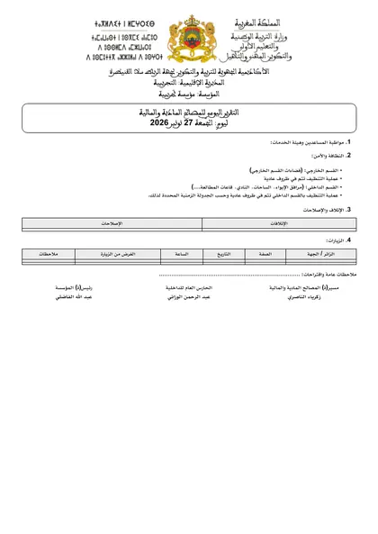
التقرير اليومي للمصالح المادية والماليةالمطعمة / المالية

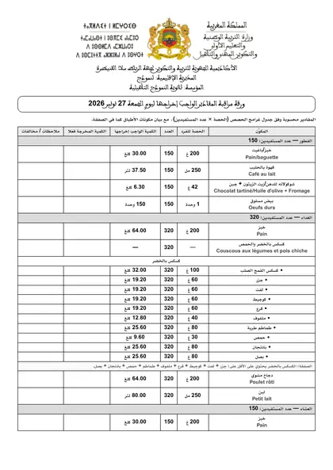
ورقة مراقبة المقادير الواجب إخراجهاالمطعمة

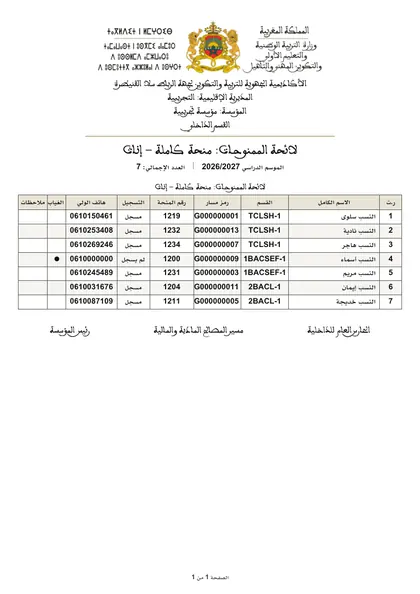
لائحة الممنوحات (منحة كاملة - إناث)المطعمة

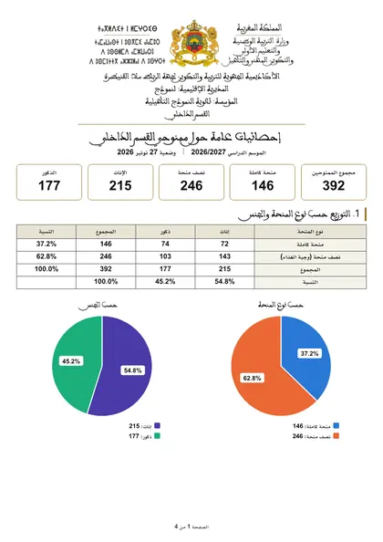
إحصائيات الممنوحين (الصفحة 1 من 4)المطعمة


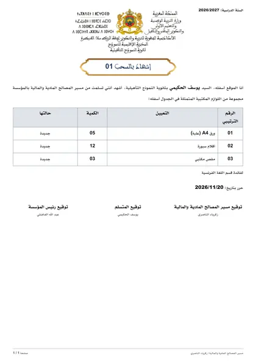
إشهاد بالسحبالاقتصاد

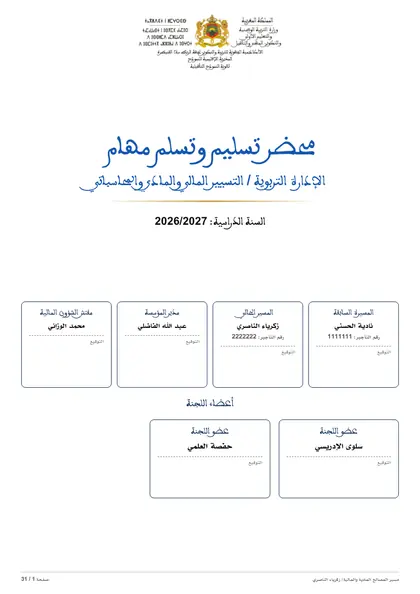
غلاف محضر تسليم وتسلم المهامالاقتصاد

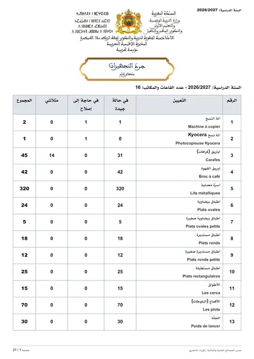
جرد التجهيزات بإحدى القاعاتالاقتصاد

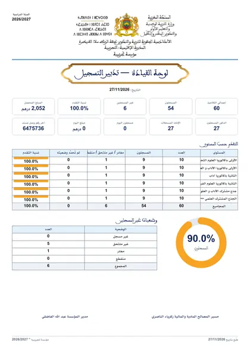
لوحة قيادة التسجيلالتسجيل
قريبا
قريباسيكون البرنامج متوفرا قريبا للتحميل بعد أن تخضع كل مكوناته لعملية التجريب. تابعونا على صفحتنا في فيسبوك لمعرفة موعد الإصدار.
تابع صفحتنا على فيسبوكشاهد الشروحات على يوتيوب